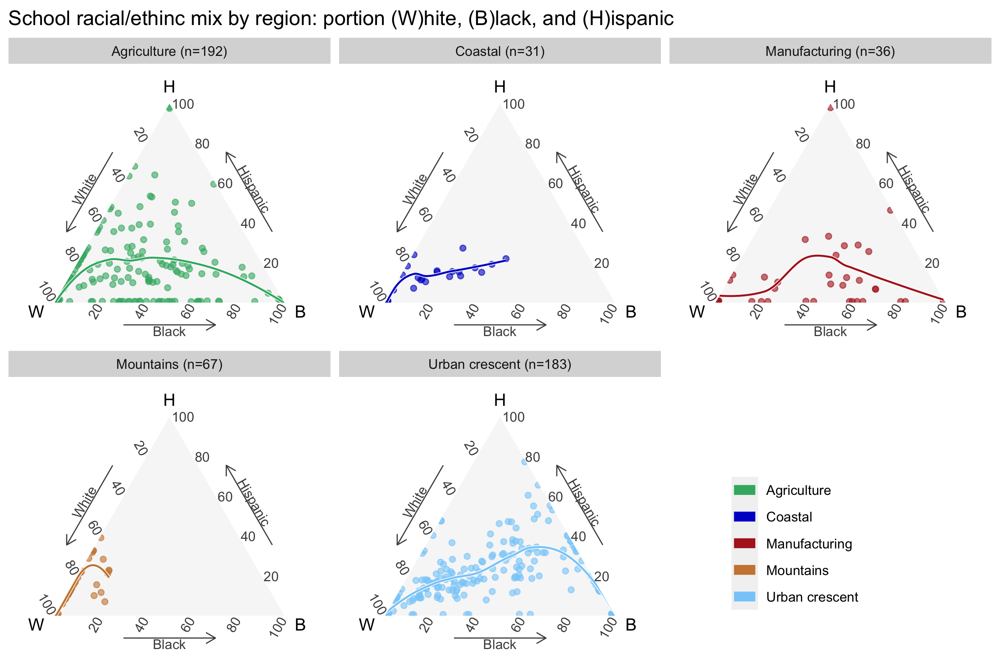

5 NC education
“The mark of a civilized man is the capacity to read a column of numbers and weep.”
― Bertrand Russell
5.1 Introduction
In this chapter we will look at NC public schools’ racial/enthic mix and school performance grade scores.
The NC Department of Public Instruction (NC DPI) tracks 717 schools that award high school diplomas. They include public “regular schools” that are part of a county or city school district, alternate schools (mostly public, some private), career or technical schools (mostly public), and private charter schools.
For this analysis I focus on the 530 public “regular schools” that are part of a county or city public school district and which award high school diplomas. There are three sets of grade levels in these schools:
| There are 530 regular public schools in NC associated with a public county or city school district awarding high school diplomas |
|
| school_category | n |
|---|---|
| High school grade levels | 496 |
| High school and middle school grade levels | 21 |
| All grade levels | 13 |

5.2 Population by racial group
The U.S. Census API for the American Community Survey (ACS) provides data at various levels of geographic aggregation, one of which is “school district (unified)”. I use that below for population counts, because it simplifies Comparing racial proportions in communities and schools. I use 5-year ACS results through 2019.
5.2.1 A note on margins of error when groups are small
Unlike the decennial census, most reported ACS data are estimates. The Census Bureau helpfully reports the associated Margin of Error at a level of uncertainly. The default, which I use, is 90%, meaning if the survey were repeated very many times, 90% of the times the results would be within the \(estimate \pm moe\). The smaller the group, the larger the MOE. Since the population of the subgroups is small in most school district catchment areas, large margin of error makes comparisons difficult for groups other than White and Black.
Nonetheless I will press on and make plots and observations. Due to small numbers I combine some categories:
- Asian and Hawaiian and Pacific Islander into
asian_pac - Other single race and two or more races into
two_plus
| Summary measures of margin of error in racial population subgroup by school district Five year ACS 2019 race population by school district 90% MOE is estimate +/- moe moe_ratio = moe / estimate |
||
| subgroup | moe_ratio_median | moe_ratio_avg |
|---|---|---|
| white | 1% | 2% |
| black | 5% | 11% |
| two_plus | 25% | 30% |
| asian_pac | 26% | 57% |
| native_am | 45% | 56% |
There are of course distributions of MOE ratios:
5.3 Racial/ethnic mix in schools
Since the three largest subgroups are White, Black, and Hispanic, I will give them extra focus. Recall that the U.S. Census bureau considers White and Black to be racial characteristics while Hispanic / non-Hispanic are ethnic categories. Hispanic students may be any race (or multiple races): white, black, other single race, or two or more races.
Figure 5.3 shows the distribution of these groups as a percent of school population, both as density and empirical cumulative distribution plots.
Figure 5.3 lacks one important aspect: in what proportions are these three subgroups distributed in each school?
We can answer that question using ternary diagrams, which show the relationship among three variables, in this case: White, Black, and Hispanic students as a percent of each school’s student body. Most noticeable in Figure 5.4 below are the points aligned with the sides of the triangle. For example, the number of black students is “masked” for schools where there are less than 10 black students taking the End of Course (EOC) exams1, and a point representing this lays along the left edge representing zero percent black. Similarly, points aligned along the right of the triangle are schools with masked number of White students.
Some points are overplotted. Binning them and coloring hexagons based on the \(log_2(count)\) of points in each bin reveals the level of overplotting. The two hexagons with the highest counts are schools that are nearly all White and nearly all Black. The colored lines are regional LOESS regression lines2
Faceting the ternary plots by region makes the patterns more visible.

5.4 Comparing racial proportions in communities and schools
White and black subgroups have the largest disparities in proportion of population in the schools compared to the communities aligned with school district boundaries. Two observations:
In all regions and in nearly all school districts, whites are a larger proportion of the community than students in the public school district.
In the agricultural, manufacturing, and urban regions the proportion of black students exceeds the community in about half the school districts.
Are these dynamics due to the relative aging of the white population (and other subgroups being relatively younger with school-age children)? Family size? A higher proportion of white families sending their kids to private schools? Some other reason? Or a combination of reasons?
5.5 School performance grades
A condition of funding by the U.S. Department of Education is that schools report performance to hold them accountable to parents, their communities and the U.S. Department of Education. No Child Left Behind specified certain “accountability subgroups” for which performance had to be reported, if if targets were not met federal funding would be reduced. Amended in 2016 as part of the Every Student Succeeds Act (ESSA) the regulations were published in the Federal Register on Nov 29, 20163:,
… requires each [State educational agency] SEA to have an accountability system that is State-determined and based on multiple indicators, including, but not limited to, at least one indicator of school quality or student success and, at a State’s discretion, an indicator of student growth.
Thus the NC Department of Public Instruction publishes school report cards. I use data from 2019, because (1) the NC DPI’s “analytic section” was decommissioned in 20204; and (2) reporting certain data became optional during the COVID-19 pandemic5.
The primary indicator of school performance I use below is the school performance score published by the North Carolina DPI Office of Accountability and Testing. The Technical Guide for School Accountability and Testing Results6 defines the main components of the score as follows:
1.4. School Performance Grade Indicators for High Schools
The high school model applies the weights in the system, where growth is 20% of the model, and the remaining indicators, Academic Achievement and School Quality Student Success indicators, are 80%.
The high school indicators making up 80% of the model are as follows:
- End-of-Course Tests – Students that score at or above Level 3 on four End-of-Course
- (EOC) assessments – NC Math 1, NC Math 3, English II, and Biology – are counted for performance. NC Math 1, NC Math 3, and English II are also counted for growth. Biology is not part of growth. The NCEXTEND1 is an alternate assessment for students with disabilities instructed in the NC Extended Content Standards and is included in performance only, not in growth.
- Cohort Graduation Rate – The percentage of students who graduate within the defined cohort in four years or less.
- English Learner Progress – Students who are classified as English earners take an English language attainment assessment which is included in the accountability model for students in grade ten.
- Math Course Rigor – The percentage of grade twelve students passing the NC Math 3 course.
- The ACT/WorkKeys – The percentage of grade twelve students meeting either the University of North Carolina System’s admissions minimum requirement on a college admissions assessment (a composite score of nineteen on The ACT) or who meet the standard, earning a certificate at the Silver, Gold, or Platinum level, on a nationally normed test of workplace readiness (ACT WorkKeys assessments).
The NC DPI assigns grades based on the scores; I use the numerical scores instead, since they are more informative and are better suited for plotting and regression analysis.

The cumulative distribution plot of school performance scores plotted below are summarized by the school district (purple) and shown individually for all schools (green). As one would expect, the school district averages are not as extreme. Above the median there is a noticeable divergence between top-performing schools and school districts, which is a reminder that the performance of schools within a single school district can vary quite a lot.

5.5.1 School accountability subgroups and school performance scores
Also noted in the amended regulations published in the Federal Register on November 29, 20167:
…Consistent with section 1111(c)(2) of the ESEA, the regulations require that a State include certain subgroups of students, separately, when establishing long-term goals and measurements of interim progress under § 200.13, measuring the performance on each indicator under § 200.14, annually meaningfully differentiating schools under § 200.18, and identifying schools under § 200.19. These subgroups of students include economically disadvantaged students, students from each major racial and ethnic group, children with disabilities, as defined in section 8101(4) of the ESEA, and English learners, as defined in section 8101(20) of the ESEA. However, the statute does not prohibit a State from using additional subgroups in its statewide accountability system, which may include combined subgroups. We also believe it is appropriate for States to retain flexibility to include various additional subgroups, based on their contexts, so long as each required individual subgroup is also considered. Accordingly, we are not revising the regulations….
I show data for most of these subgroups:
| Subset of school accountability subgroups used in this analysis |
|||
| subgroup | description | n_schools | in_subset |
|---|---|---|---|
| ALL | All Students | 519 | Y |
| AM7 | American Indian | 12 | Y |
| AS7 | Asian | 57 | Y |
| BL7 | Black | 342 | Y |
| EDS | Economically Disadvantaged | 476 | Y |
| ELS | English Learners | 146 | |
| HI7 | Hispanic | 338 | Y |
| MU7 | Two or More Races | 118 | Y |
| SWD | Students with Disabilities | 346 | Y |
| WH7 | White | 460 | Y |
Figure 5.10 and Figure 5.11 show large differences in the distribution of school performance scores by subgroup and region. Are there other variables associated with larger variance in scores? We will answer that in the next chapter.
“Data is masked if there are fewer than 10 records.” Page 14. https://www.dpi.nc.gov/media/6931/download ↩︎
Federal Register / Vol. 81, No. 229 / Tuesday, November 29, 2016 / Rules and Regulations, page 86076 https://thefederalregister.org/81-FR/86076 ↩︎
“For the 2020–21 school year, the U.S. Department of Education (USED) and the North Carolina General Assembly (Session Law 2021-130) waived requirements for reporting the school-level accountability model, School Performance Grades, including its indicators for achievement and growth. A condition of the federal waiver requires continued support for schools previously designated as Comprehensive Support and Improvement (CSI) and Targeted Support and Improvement (TSI). Likewise, Session Law 2021-130 requires continued support for schools identified as low performing based on data from 2018–19 school year.” https://www.dpi.nc.gov/media/12854/download?attachment ↩︎
Technical Guide for School Accountability and Testing Results. August 2022. Page 3. https://www.dpi.nc.gov/media/15552/open ↩︎
Federal Register / Vol. 81, No. 229 / Tuesday, November 29, 2016 / Rules and Regulations, page 86109. https://thefederalregister.org/81-FR/86076 ↩︎